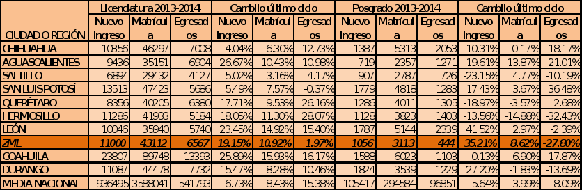

En una primer entrega se analizaron los resultados disponibles a Junio del presente año que correspondían al Anuario Estadístico de la Asociación Nacional de Universidades e Instituciones de Educación Superior (ANUIES) correspondiente al ciclo escolar 2012 – 2013. A día de hoy se tiene el Anuario Estadístico de ANUIES 2013-2014, por lo cual continuaremos la revisión de la educación superior en la ZML de acuerdo a los datos más recientes.
De 2013 a 2014 los estudiantes de nivel superior en nuestra ciudad pasaron de 38,867 en nivel licenciatura a 43,112, con un aumento de 10.9 % en la matrícula mientras a nivel nacional aumento en un 8.3 %. A su vez el nuevo ingreso aumentó en un 19 % respecto al ciclo 2012-2013, mientras en el ámbito nacional solamente se aumentó un 6 % el nuevo ingreso. En posgrado si bien la matrícula creció en un 8 %, superior al 4 % de la media nacional, es en el nuevo ingreso a posgrados donde se refleja una franca mejoría, pasando de 785 nuevos estudiantes a 1,056, lo cual significa un aumento de 35 % en los nuevos ingresos a posgrado. Durante el mismo periodo el nuevo ingreso a posgrado a nivel nacional creció solo 5.6 %, y ciudades similares a la ZML como Querétaro, Aguascalientes, Querétaro y Saltillo, tuvieron menos ingresos a posgrado que en el año anterior, destacando en este sentido sólo León con un incremento de 40 %.

A Nivel nacional 2,459,449 de los alumnos de licenciatura la cursan en una institución pública, esto es el 69 %, proporción muy similar a la ZML donde el 68 % de los 43,112 alumnos de licenciatura cursan su educación superior en una institución de sostenimiento público. Misma proporción que en el estado de de Coahuila, sin embargo en el Estado de Durango es el 79 % de la matrícula en el sector público.
Sin embargo si se revisa de acuerdo a los diversos campos de conocimiento, nos damos cuenta que tanto en lo nacional como en lo local hay diversos énfasis de la educación tanto pública como privada.
En el ámbito nacional todos los campos de conocimiento concentran la mayor parte de su matrícula en el sector pública, sin embargo en nuestra Zona Metropolitana, no es así. Los estudios de agronomía y veterinaria se centran principalmente en el sector público con un 95 % y 100 % en los ámbitos nacionales y metropolitanos respectivamente. Sin embargo las Artes y Humanidades en nuestra región se concentran en un 83 % en instituciones privadas lo cual muestra poca accesibilidad a determinadas disciplinas, que inciden en el desarrollo cultural de la región.
En cambio las ciencias naturales y exactas, que incluyen disciplinas informáticas y las ingenierías que son una importante condición del desarrollo industrial de nuestra región están concentradas en 91 % y 88% respectivamente en el sector público. Esto nos muestra la posibilidad de mayor incidencia en la oferta de disciplinas orientadas directamente a vocaciones definidas como parte de política pública, con menor dependencia a las dinámicas de mercado de la educación privada.
Llama también la atención que en la Zona Metropolitana de La Laguna, disciplinas orientadas a servicios básicos a la sociedad ya sean públicos o privados, como es salud y educación tiene mayor participación de la educación privada que de acuerdo a la tendencia nacional, lo cual muestra un potencial de orientar los sectores educativos y de salud como clústeres de servicios privados.
Por último, otro ángulo de análisis de la educación superior en nuestra región son los roles culturales asociados al género de acuerdo a los campos de conocimiento, que perfilan a hombres y mujeres a determinadas disciplinas.

Si bien tanto en el ámbito nacional como local, las disciplinas de salud y educación cuentan con mayor participación femenina, esta tendencia se atenúa en nuestra región, donde el caso de educación hay una participación masculina del 32 % contra el 27 % en el ámbito nacional. Sin embargo en las Ciencias Sociales y Administrativas y en las Artes y Humanidades en nuestra región existe una participación femenina mayor que en el ámbito nacional.
Por su parte la tendencia de las disciplinas agrícolas y veterinarias a mayor participación masculina se acentúa en nuestra región, donde el 71 % de los estudiantes de estas carreras son hombres. Otro campo de conocimiento con mayor participación masculina son las ingenierías donde tanto en lo nacional como en lo local el 73 % de los estudiantes son hombres. En las ciencias naturales y exactas sin embargo a pesar de que también tienen mayor participación masculina la brecha se reduce en nuestra región respecto al ámbito nacional.